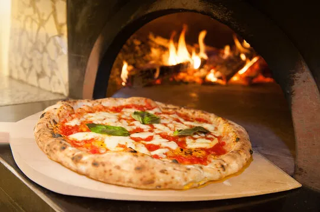

Pizza

Homemade pizza
This homemade pizza recipe is perfect for parties! Everyone loves pizza, and your guests can customize their toppings to suit their personal tastes.
Ingredients
- Pizza Dough, 1 recipe per pizza
Steps
- Preheat the oven to 500°F.
- Spread the pizza sauce onto the dough. Top with the fresh mozzarella and tomatoes and bake 10 to 12 minutes, or until the crust is browned. Remove from the oven and top with fresh basil leaves and a pinch of red pepper flakes. Drizzle with olive oil and serve.
- Combine the olive oil and garlic in a small bowl. Brush the garlic oil onto the dough, then top with the fresh mozzarella and peaches. Bake 10 to 12 minutes, or until the crust is browned. Remove from the oven and top with dollops of pesto, fresh basil, and pinches of red pepper flakes. Drizzle with olive oil and serve.